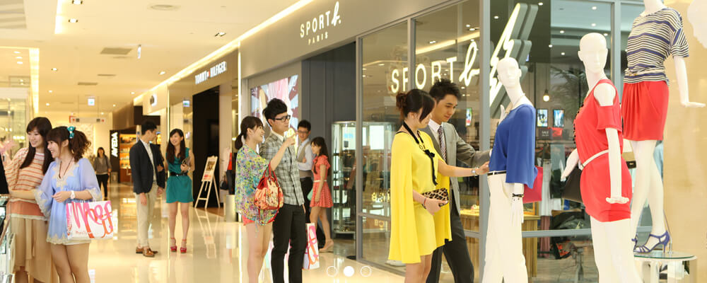
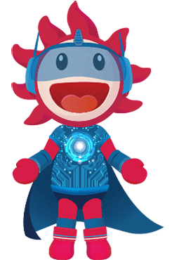
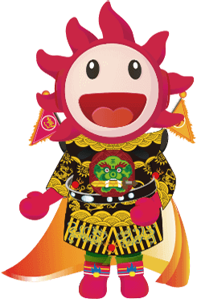
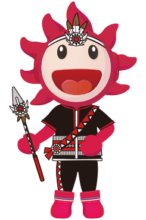

-
 遠東百貨目前在台灣有十家分公司，賣場以寬敞、舒適為規畫的原則，盡量讓消費者在逛街購物的同時，能有輕鬆、愉悅的休閒感受。
除了時尚氣氛、舒適環境之外，遠東百貨在新推出的店點特別著重主題式大型造景。Top City台中大遠百11、12樓運用六台高流明的投影機，拼接成12米寬，9米高，近三層樓高的「大型熱帶擬真海洋」，可與消費者做即時互動，彷彿沉浸在真實的海洋世界中。
Mega City板橋大遠百引人目光的焦點在9樓，斥資上億元打造的威尼斯水都造景，把300坪大、挑空3層樓高的空間保留給消費大眾休憩。呈現水都風情，打造水道、引進Gondola「貢多拉」浪漫小船，沿著威尼斯廣場安排了將近300個咖啡座，盡享潺潺流水的浪漫風情，可以在透明落地玻璃帷幕前眺望新板特區建築之美，更顯悠閒。
-
1967年成立的遠東百貨，為國內唯一上市的連鎖百貨公司，以豐富的專業知識搭配靈活的行銷策略，展現求新求變的商品內涵，不斷引領市場趨勢。
近年來遠東百貨積極轉型，引進全新概念的FE21‘，結合購物、娛樂、生活、餐飲及文化等機能，提供顧客舒適自在的購物休閒享受。2011年底開幕的板橋大遠百、台中大遠百、新竹巨城購物中心總樓地板面積近20萬坪，引進歐美賣場設計的規畫元素，結合高級超市、餐飲、娛樂、生活、文化… 等機能，擺脫制式傳統的百貨經營概念，提供顧客現代感、兼具娛樂的購物體驗。
-
2011
- 台中大遠百Top City(台中分公司)開幕
- 板橋大遠百Mega City(板橋新站分公司)開幕
-
2009
- 花蓮和平分公司開幕（原花蓮分公司結束營業）
-
2002
- 台南大遠百FE21’MegA（台南成功分公司）改裝開幕
- 台南大遠百FE21’MegA（台南公園分公司）改建完成，休閒娛樂大樓開幕
- 新竹大遠百FE21’MegA（新竹分公司）開幕（原新竹分公司結束營業）
-
2001
- 高雄大遠百FE21’MegA（高雄分公司；原高雄站前分公司結束營業）
-
2000
- 板橋分公司FE21’開幕（原板橋中山路分公司結束營業）
-
1999
- 桃園分公司FE21’喬遷站前大樓全新擴大營業（原桃園分公司結束營業）
- 台南分公司（公園路）結束營業，拆除重建百貨娛樂大樓
-
1998
- 板橋中山分公司改裝全新開幕（原板橋分公司結束營業）
-
1997
- 成立台南成功分公司
-
1996
- 成立高雄站前分公司
-
1993
- 成立板橋中山分公司
-
1991
- 成立花蓮分公司
- 嘉義分公司喬遷垂楊路自建大樓，全新擴大開幕（原嘉義國華街分公司結束營業）
-
1987
- 成立新竹分公司
-
1984
- 成立桃園分公司
-
1983
- 成立板橋分公司
-
1982
- 成立嘉義分公司（國華街）
-
1976
- 成立台南分公司（公園路）
-
1972
- 成立台北寶慶分公司（將永綏路分公司遷入合併營業）
-
1969
- 成立台中分公司（於1990年結束營業）
-
1967
- 於台北市永綏路籌設遠東百貨股份有限公司
-
2011
-
太陽寶寶
- 英文名字：Baby Sun
- 生日：8/31
- 身高：168cm
- 體重：21個購物紙袋重
- 性格：天真無邪、開朗善良、笑容燦爛， 有用不完的活力
- 興趣：逛街、看電影、享用美食專長：樂於助人、解決各種疑問
- 特色：超級暖男-笑咪咪、無時無刻釋放正面能量、晴天時心情特別好
- 最喜歡的事：到處旅遊玩樂、購物
- 喜歡的食物：大胃王寶寶，中式或異國風料理都 是他的最愛
- 最喜歡的一段話：幸福滿溢，處處分享！
寶慶 - Young寶寶
寶慶店位於西門町一帶，充滿年輕潮流感，連太陽寶寶也忍不住大買特買！！ 裝扮也因此跟著走young style~ 時時掛著陽光又有活力的笑容，隨身帶著相機記錄周遭的人文薈萃， 分享給每一位來訪寶慶店的旅人， 彼此愛上這個商圈的美好～
Mega City – 貢多拉寶寶！
太陽寶寶in板橋大遠百裡的經典地標威尼斯廣場，化身穿著水手服的可愛貢多拉水手寶寶，隨時發現顧客需求，戴上心愛的小草帽，小手一揮，掌握船槳，帶領迷路的顧客前往正確的方向、熱心的寶寶也會在顧客不知道如何逛起時，貼心的當小地陪喔！
板橋中山 - 綠精靈寶寶
全球氣候暖化加劇，環保意識逐漸抬頭，太陽寶寶鼓勵大家跟他一起動起來！變身綠化小精靈，一起動手愛地球，打造欣欣向榮的生活環境，如果對於環保小知識有不清楚的地方，寶寶隨時樂意與你分享～
桃園 - 飛天寶寶
來到了擁有全台最大國際機場的桃園，太陽寶寶化身為熱愛翱翔天際的機長，在一片蔚藍無際的天空中，持續綻放溫暖與燦爛的笑容，除了融化每位桃園市的一份子，也會無時無刻以最佳速度隨時幫助每一位有需求的顧客喔！
新竹 – 科技寶寶
客家古文化×風城×新興科技園區進駐，富有傳統風土民情的竹塹古城，結合尖端科技發展。屬於新竹的時尚-以網路串聯古與今結合的力與美，太陽寶寶穿上科技感十足的配備，及飄逸小斗篷，不但象徵無垠未來，而且講求令人印象深刻的速度感，希望帶給每位訪客既便利又難忘的購物體驗！
Top City - 花寶寶
太陽寶寶自從到台中一嘗名產太陽餅後，便愛上了這跟他一樣甜滋滋的幸福口感，不但不想離開，還把太陽餅列入最愛的口袋點心之一喔！太陽寶寶活潑開朗的個性，與台中市花-山櫻花的花語－「向你微笑」，簡直是完美搭配！就讓這個活力充沛又笑容可掬的花仙子小幫手，帶你到處趴趴造！
嘉義 - 嘟嘟寶寶
嘉義擁有著名地標阿里山與小火車，太陽寶寶巧扮最萌鐵道火車長，隨著火車啟動的嘟嘟聲，服務每一位造訪嘉賓當他對你熱情揮動雙手時，注意寶寶頭上可能會不小心掉落的小帽子，請幫他撿起來並戴上，讓他燦爛綻放的大太陽溫暖你的身心！
台南 - 劍獅寶寶
台南為安平古都所在地，擁有豐富的歷史文化，其中又以特色民俗手工藝劍獅為著名，太陽寶寶來到台南後，穿上印有劍獅圖騰的衣服，願能為每位來訪顧客祈福，大家開開心心出門逛街，平平安安回家。來一場難忘的Shopping之旅吧！
高雄 - 海洋寶寶
高雄為著名港都，一直以來都是台灣著名海運樞紐，身為一個陽光暖男的太陽寶寶，一邊迎著高雄港海風的吹拂，同時也化身為熱情的小水手－海洋寶寶，掌起舵兒向前划，再大的海浪都不怕，讓我們跟著海洋寶寶一起航向美麗的大道吧！
花蓮 - 酋長寶寶
花蓮是後山自然美景之都，因為都市開發程度不高，有幸保留許多珍貴的原住民多元文化。變身為酋長寶寶後，太陽寶寶要用身上精心編織的珍傳手工藝圖騰，搭配招牌笑容，向大家推廣花蓮的美，成為史上最Ｑ小導遊。來花蓮遊玩之餘也可以到遠百好好放鬆購物喲！
  